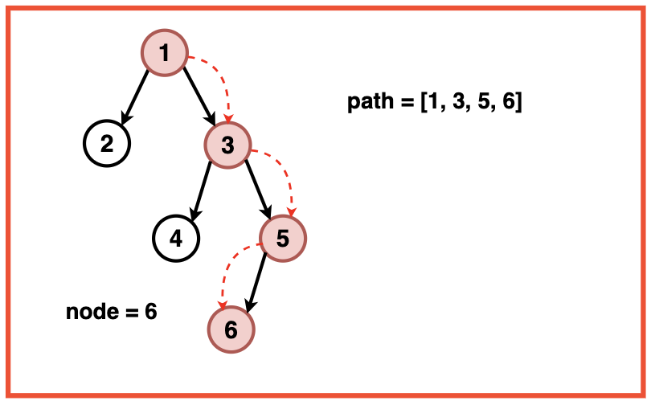
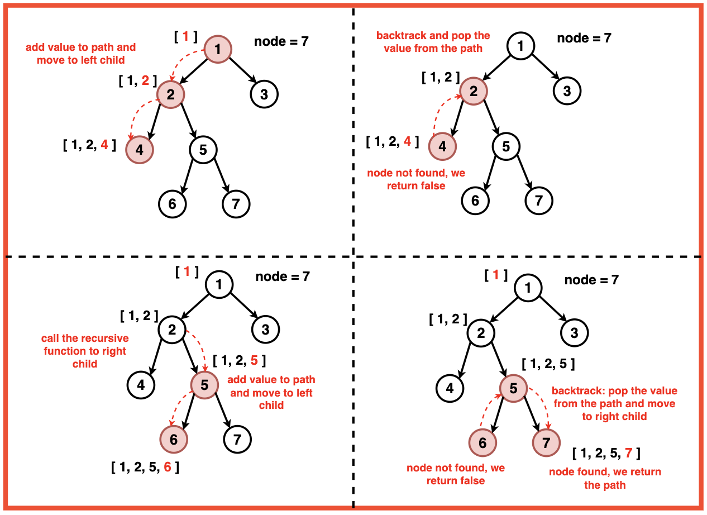
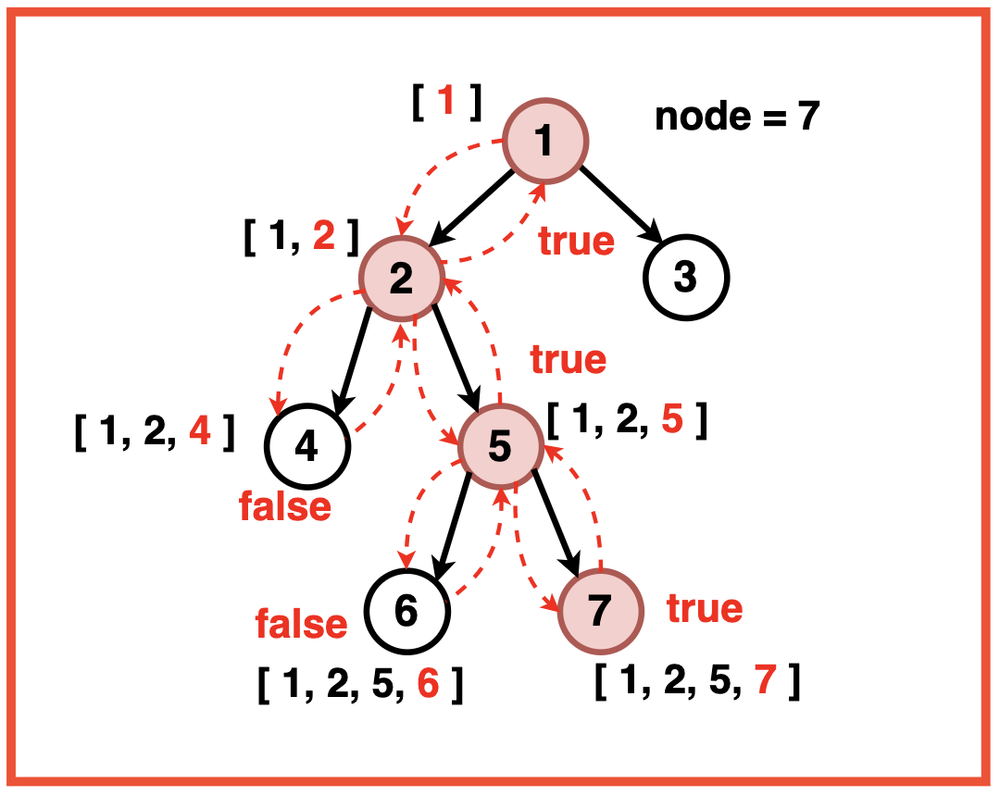

Disclaimer: Don’t jump directly to the solution, try it out
yourself first.
Optimal Approach
Algorithm / Intuition
To find the path from the root to the given node in the tree we use a Depth-First Traversal. We initialise a vector to store the current path and recursively travel to each node in the tree. At each step, we check if the current node is null, if it is we return false and if the data value of the current node is equal to the given node, we return true signifying the end of the traversal search.

During the recursive calls, we append the current node’s data value to the vector and explore the left and right children. We backtrack if the target value is not found as the children return ‘false’ and remove the last node from the path vector. In the end, we return the vector containing the path from the root to the given node.
Algorithm:
Step 1:Initialise an empty vector to store the current path.
Step 2: Initialise a recursive function to explore the Binary Tree using Depth First Search. Starting from the root node, we traverse the tree using the inorder sequence.

Base Case: If the current node is null then we return false, indicating the end of the path.
If the current node’s data value is equal to the given node then we return the true, signifying the completion of the path.
Step 3: Recursive Calls:
During the recursive exploration, the recursive function appends the current node's data value to the vector arr.
It checks if the current node's value matches the target value x. If it does, the function returns true, indicating the completion of the path to the target node.
We then call the function on the left and right children of the current node.

Step 4: Backtracking:
If the target value x is not found in the current path, the function backtracks by removing the last node from the path vector arr.
This means the current node is not part of the valid path from the root to the given node ensuring that the algorithm explores all possible paths and doesn't miss any valid routes to the target node.
Step 5: In the end, we return the vector containing the path from the root to the given node.
Code
#include <iostream>
#include <unordered_map>
#include <vector>
#include <queue>
using namespace std;
// TreeNode structure
struct TreeNode {
int val;
TreeNode *left;
TreeNode *right;
TreeNode(int x) : val(x), left(nullptr), right(nullptr) {}
};
class Solution {
public:
// Function to find the path from the
// root to a given node with value 'x'
bool getPath(TreeNode* root, vector<int>& arr, int x) {
// Base case: If the current
// node is null, return false
if (!root) {
return false;
}
// Add the current node's
// value to the path vector
arr.push_back(root->val);
// If the current node's value is equal
// to the target value 'x', return true
if (root->val == x) {
return true;
}
// Recursively search for the target value
// 'x' in the left and right subtrees
if (getPath(root->left, arr, x)
|| getPath(root->right, arr, x)) {
return true;
}
// If the target value 'x' is not found
// in the current path, backtrack
arr.pop_back();
return false;
}
// Function to find and return the path from
// the root to a given node with value 'B'
vector<int> solve(TreeNode* A, int B) {
// Initialize an empty
// vector to store the path
vector<int> arr;
// If the root node is null,
// return the empty path vector
if (A == NULL) {
return arr;
}
// Call the getPath function to find
// the path to the node with value 'B'
getPath(A, arr, B);
// Return the path vector
return arr;
}
};
int main() {
TreeNode* root = new TreeNode(3);
root->left = new TreeNode(5);
root->right = new TreeNode(1);
root->left->left = new TreeNode(6);
root->left->right = new TreeNode(2);
root->right->left = new TreeNode(0);
root->right->right = new TreeNode(8);
root->left->right->left = new TreeNode(7);
root->left->right->right = new TreeNode(4);
Solution sol;
int targetLeafValue = 7;
vector<int> path = sol.solve(root, targetLeafValue);
cout << "Path from root to leaf with value " <<
targetLeafValue << ": ";
for (int i = 0; i < path.size(); ++i) {
cout << path[i];
if (i < path.size() - 1) {
cout << " -> ";
}
}
return 0;
}
import java.util.ArrayList;
import java.util.List;
// TreeNode structure
class TreeNode {
int val;
TreeNode left;
TreeNode right;
public TreeNode(int x) {
val = x;
left = null;
right = null;
}
}
public class Solution {
// Function to find the path from the
// root to a given node with value 'x'
public boolean getPath(TreeNode root, List<Integer> arr, int x) {
// Base case: If the current
// node is null, return false
if (root == null) {
return false;
}
// Add the current node's
// value to the path list
arr.add(root.val);
// If the current node's value is equal
// to the target value 'x', return true
if (root.val == x) {
return true;
}
// Recursively search for the target value
// 'x' in the left and right subtrees
if (getPath(root.left, arr, x) || getPath(root.right, arr, x)) {
return true;
}
// If the target value 'x' is not found
// in the current path, backtrack
arr.remove(arr.size() - 1);
return false;
}
// Function to find and return the path from
// the root to a given node with value 'B'
public List<Integer> solve(TreeNode A, int B) {
// Initialize an empty
// list to store the path
List<Integer> arr = new ArrayList<>();
// If the root node is null,
// return the empty path list
if (A == null) {
return arr;
}
// Call the getPath function to find
// the path to the node with value 'B'
getPath(A, arr, B);
// Return the path list
return arr;
}
public static void main(String[] args) {
TreeNode root = new TreeNode(3);
root.left = new TreeNode(5);
root.right = new TreeNode(1);
root.left.left = new TreeNode(6);
root.left.right = new TreeNode(2);
root.right.left = new TreeNode(0);
root.right.right = new TreeNode(8);
root.left.right.left = new TreeNode(7);
root.left.right.right = new TreeNode(4);
Solution sol = new Solution();
int targetLeafValue = 7;
List<Integer> path = sol.solve(root, targetLeafValue);
System.out.print("Path from root to leaf with value " +
targetLeafValue + ": ");
for (int i = 0; i < path.size(); ++i) {
System.out.print(path.get(i));
if (i < path.size() - 1) {
System.out.print(" -> ");
}
}
}
}
class TreeNode:
def __init__(self, x):
self.val = x
self.left = None
self.right = None
class Solution:
def getPath(self, root, arr, x):
"""
Function to find the path from the
root to a given node with value 'x'
"""
# Base case: If the current
# node is None, return False
if not root:
return False
# Add the current node's
# value to the path list
arr.append(root.val)
# If the current node's value is equal
# to the target value 'x', return True
if root.val == x:
return True
# Recursively search for the target value
# 'x' in the left and right subtrees
if self.getPath(root.left, arr, x) or self.getPath(root.right, arr, x):
return True
# If the target value 'x' is not found
# in the current path, backtrack
arr.pop()
return False
def solve(self, A, B):
"""
Function to find and return the path from
the root to a given node with value 'B'
"""
# Initialize an empty
# list to store the path
arr = []
# If the root node is None,
# return the empty path list
if not A:
return arr
# Call the getPath function to find
# the path to the node with value 'B'
self.getPath(A, arr, B)
# Return the path list
return arr
if __name__ == "__main__":
root = TreeNode(3)
root.left = TreeNode(5)
root.right = TreeNode(1)
root.left.left = TreeNode(6)
root.left.right = TreeNode(2)
root.right.left = TreeNode(0)
root.right.right = TreeNode(8)
root.left.right.left = TreeNode(7)
root.left.right.right = TreeNode(4)
sol = Solution()
target_leaf_value = 7
path = sol.solve(root, target_leaf_value)
print(f"Path from root to leaf with value {target_leaf_value}: ", end="")
for i in range(len(path)):
print(path[i], end="")
if i < len(path) - 1:
print(" -> ", end="")
// TreeNode structure
class TreeNode {
constructor(x) {
this.val = x;
this.left = null;
this.right = null;
}
}
class Solution {
// Function to find the path from the
// root to a given node with value 'x'
getPath(root, arr, x) {
// Base case: If the current
// node is null, return false
if (!root) {
return false;
}
// Add the current node's
// value to the path array
arr.push(root.val);
// If the current node's value is equal
// to the target value 'x', return true
if (root.val === x) {
return true;
}
// Recursively search for the target value
// 'x' in the left and right subtrees
if (this.getPath(root.left, arr, x) ||
this.getPath(root.right, arr, x)) {
return true;
}
// If the target value 'x' is not found
// in the current path, backtrack
arr.pop();
return false;
}
// Function to find and return the path from
// the root to a given node with value 'B'
solve(A, B) {
// Initialize an empty
// array to store the path
const arr = [];
// If the root node is null,
// return the empty path array
if (A === null) {
return arr;
}
// Call the getPath function to find
// the path to the node with value 'B'
this.getPath(A, arr, B);
// Return the path array
return arr;
}
}
// Main function
function main() {
const root = new TreeNode(3);
root.left = new TreeNode(5);
root.right = new TreeNode(1);
root.left.left = new TreeNode(6);
root.left.right = new TreeNode(2);
root.right.left = new TreeNode(0);
root.right.right = new TreeNode(8);
root.left.right.left = new TreeNode(7);
root.left.right.right = new TreeNode(4);
const sol = new Solution();
const targetLeafValue = 7;
const path = sol.solve(root, targetLeafValue);
console.log("Path from root to leaf with value " +
targetLeafValue + ": " + path.join(" -> "));
}
// Run the main function
main();
Output
Path from root to leaf with value 7: 3 -> 5 -> 2 -> 7
Complexity Analysis
Time Complexity: O(N) where N is the number of nodes in the binary tree as each node of the binary tree is visited exactly once in the inorder traversal.
Space Complexity: O(N) awhere N is the number of nodes in the binary tree. This is because the stack can potentially hold all nodes in the tree when dealing with a skewed tree (all nodes have only one child), consuming space proportional to the number of nodes.
O(H): In the average case or for a balanced tree, the maximum number of nodes that could be in the stack at any given time would be roughly the height of the tree hence O(log2N).
Video Explanation
Special thanks to Gauri Tomar for contributing to this article on takeUforward. If you also wish to share your knowledge with the takeUforward fam, please check out this article